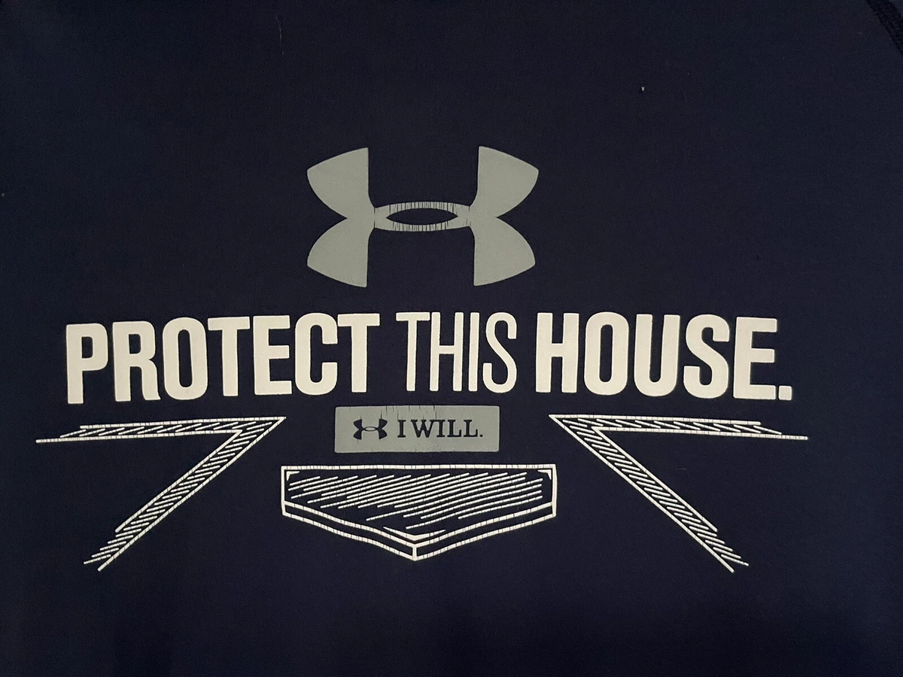
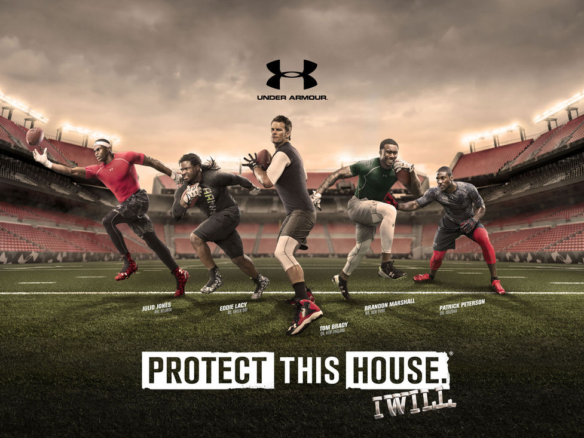
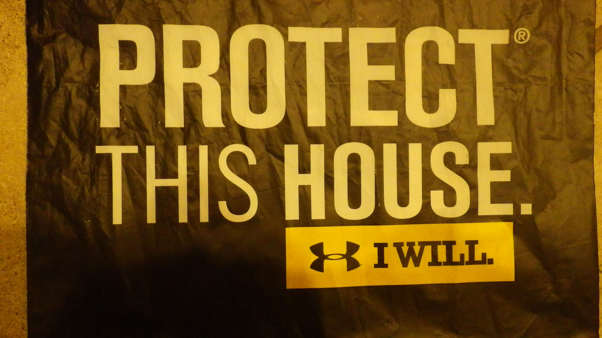

Concept AD — 2023
Under Armour
Storyboard and concept ad for Under Armour, built around the slogan "Protect This House — I Will." The piece explores what it looks like when a brand's identity meets a cinematic, heightened environment.
Environment and motion designed in Cinema 4D with compositing in After Effects. The visual language draws from two earlier school projects — ToonRun and CityRig 1.6 — refined into a single cohesive tone.


